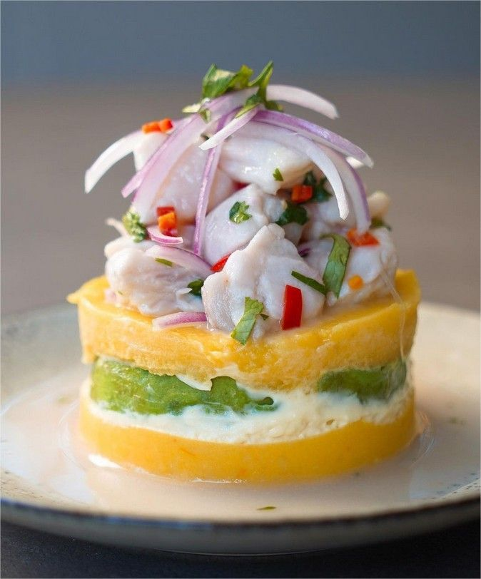

Es un plato que combina dos de los platos más populares del Perú: la causa limeña y el ceviche.
Ingredientes
Para la causa
500 gramos de papas amarillas
1 chorro de aceite
4 cucharadas soperas de pasta de ají amarillo
sal al gusto
2 paltas
Para el ceviche
4 filetes de pescado
2 cebollas
1 rama de apio
3 dientes de ajo
1 trozo de kion
1 cubilete de chilcano o caldo de pescado
7 limones
1 ají limo
1 rama de culantro
sal al gusto
Preparación
Sancocha las papas amarillas
Rápidamente, pélalas y colócalas en el prensador para que al aplastarlas no requiera mucho esfuerzo. Luego, deja enfriar.
Sazona la papa echando un buen chorro de aceite, el jugo de 4 limones, la pasta de ají amarillo y sal al gusto. Amasa bien hasta obtener una masa homogénea y reserva.
Para el ceviche, corta los filetes de pescado en cubos medianos y regulares. Las piezas que no te quedaron de esta forma no las deseches, resérvalas para hacer leche de tigre. Coloca los cubos de pescado en un bowl y sazónalos con media cucharadita de ajo molido y una pizca de sal. Resérvalos en la refrigeradora.
Corta la cebolla en pluma, es decir, empieza retirando los 2 extremos de la cebolla, pártela por la mitad, quita la capa más externa además del corazón (este último resérvalo para hacer la leche de tigre) y con la parte plana sobre una tabla corta tiras delgadas. Reserva.
Para la leche de tigre vierte en la licuadora un trozo de apio, el corazón de la cebolla, unos dientes de ajo, un trozo de kion pelado, la merma de pescado, caldo de pescado o chilcano, una cucharadita de sal y jugo de limón. Licúa bien y luego cuela.
Agrega culantro y ají limo, ambos finamente picados, al bowl del pescado y añade un poco de la cebolla en pluma. Remueve bien.
Termina el ceviche agregando un buen chorro de leche de tigre y el jugo de limón. Rectifica la sazón.